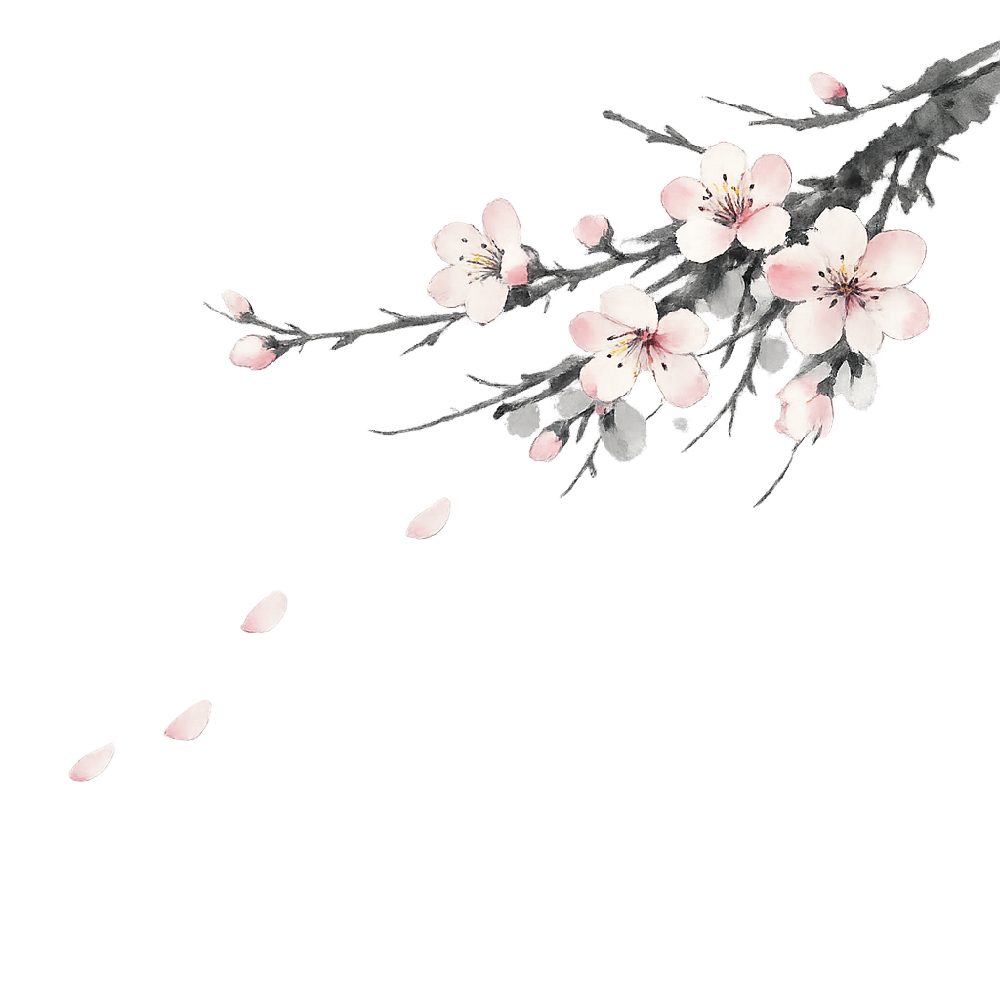

回归本心，重塑内在根基
每个人心中都住着一个“内在小孩”，那是我们最真实、最纯粹的情感内核。
然而，在成长与社交的博弈中，为了抵御外界的负面情绪——如嫉妒、焦虑或冷漠——我们往往选择穿上厚重的盔甲，却也在无意间隔绝了那份与生俱来的共情力与创造力。


每个人心中都住着一个“内在小孩”，那是我们最真实、最纯粹的情感内核。
然而，在成长与社交的博弈中，为了抵御外界的负面情绪——如嫉妒、焦虑或冷漠——我们往往选择穿上厚重的盔甲，却也在无意间隔绝了那份与生俱来的共情力与创造力。
视频课程正在录制中，敬请期待...
通过心理剧场，探索社交面具后的真实自我。